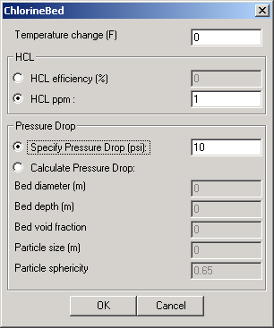
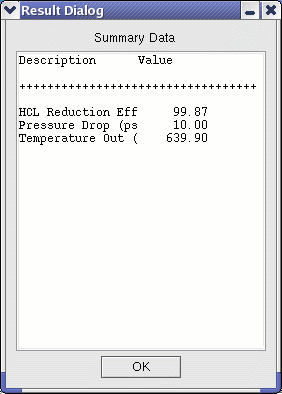

The Chlorine Guard Bed (CGB) module is part of the warm (hot) gas cleanup system designed to remove chlorine from the gas stream. Chlorine removal is required prior to desulfurization because chlorine tends to react with sulfur sorbents. A commercially available nahcolite sorbent operating at 1000° F has been proposed to remove chloride (and other halogens). The CGB module is intended to be placed after the syngas has been cooled to the appropriate temperature (about 1000° F), and before the desulfurization steps. It is assumed that a chlorine guard bed would be used for both warm and hot gas cleanup, provided the appropriate sorbent is used.
The CGB model acts as a component separator. The user provides either an HCl removal efficiency or an exit HCl concentration (required to be below the inlet concentration). In addition, a temperature drop can be specified to account for heat losses. Pressure drop across the unit can either be specified or computed using required unit configurations specified by the user in the User Interface (UI). The pressure drop is based on the Ergun equation [Kunii and Levenspiel, 1969] and requires the bed diameter, depth, void fraction, nominal particle size, and particle sphericity. The unit outputs are the exit gas state: temperature, pressure and composition.
|  | This user interface first allows the user to specify the change in temperature of the gas through the module. Positive values represent an increase of temperature in the gas between inlet and outlet ports. (Note that the temperature change is measured in degrees Fahrenheit) HCl removal calculations can be made either by specifying the desired HCl removal efficiency or by specifying the desired exit HCl concentration. Pressure drop across the module can either be specified (in psi) or computed within the module. The calculated pressure drop is based on the Ergun equation and requires several module parameters. Void fraction is defined as 1 - sorbent volume / bed volume. The particle size can be computed as the diameter of a sphere of the same volume as the particle. The sphericity is the surface area of the sphere described above divided by the actual particle surface area. Default values are provided for temperature drop, exit HCl concentration, specified pressure drop, and particle sphericity (for the computed pressure drop option). |
|  | After the module has executed, the Summary Data button provides summary information. The module outputs the HCL reduction efficiency, pressure drop (in psi) and the temperature out (in Kelvin). |